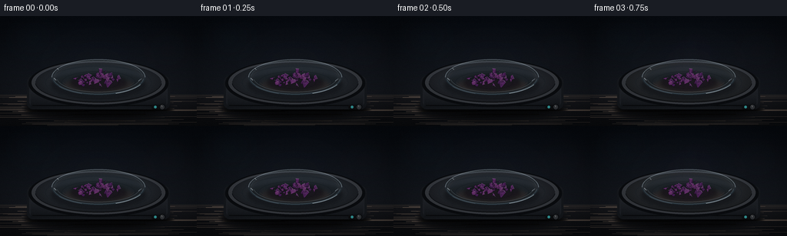
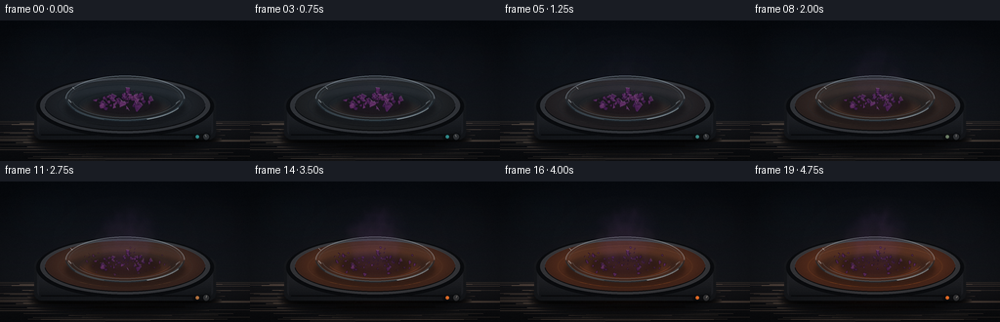
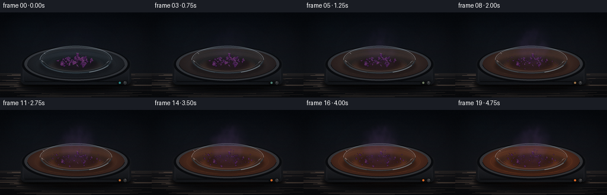
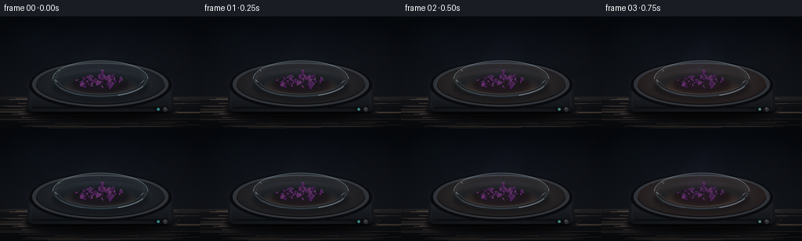
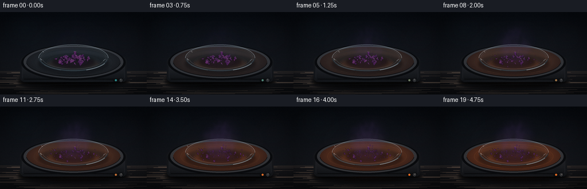
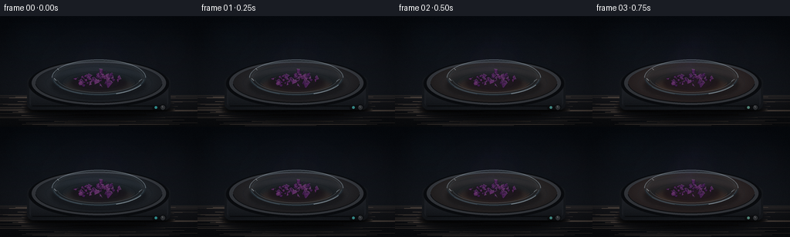

CODING AGENTS AS PIXEL WORLD MODELS
traex/DeepSeek-V4.1-Flash · phygen_118
点击播放 · 原生 RGB 像素
逐轮保存的候选
回放视频、检查图与代码变化。
每份候选均可单独播放。实际图片检查记录在下方工具轨迹中。
候选 01播放与检查图
点击播放 · 原生 RGB 像素


展开代码变化
--- 上一保存版本
+++ 本次保存版本
@@ -0,0 +1,525 @@
+from pathlib import Path
+import math
+
+import numpy as np
+from PIL import Image, ImageDraw, ImageFilter
+
+import artifact_io
+
+
+CASE_DIR = Path(__file__).resolve().parent
+WIDTH, HEIGHT = 256, 144
+FRAMES, FPS = 20, 4
+SS = 4
+RW, RH = WIDTH * SS, HEIGHT * SS
+
+
+def sc(value):
+ return int(round(value * SS))
+
+
+def pt(x, y):
+ return (sc(x), sc(y))
+
+
+def bbox(cx, cy, rx, ry):
+ return (sc(cx - rx), sc(cy - ry), sc(cx + rx), sc(cy + ry))
+
+
+def clamp(value, lo=0.0, hi=1.0):
+ return max(lo, min(hi, value))
+
+
+def smoothstep(edge0, edge1, value):
+ x = clamp((value - edge0) / (edge1 - edge0))
+ return x * x * (3.0 - 2.0 * x)
+
+
+def mix(a, b, amount):
+ return tuple(int(round(a[i] + (b[i] - a[i]) * amount)) for i in range(len(a)))
+
+
+def gradient_image(top, bottom):
+ rows = np.linspace(0.0, 1.0, RH, dtype=np.float32)[:, None, None]
+ top = np.asarray(top, dtype=np.float32)[None, None, :]
+ bottom = np.asarray(bottom, dtype=np.float32)[None, None, :]
+ data = top * (1.0 - rows) + bottom * rows
+ data = np.repeat(data, RW, axis=1)
+ return Image.fromarray(np.uint8(np.clip(data, 0, 255)), "RGB").convert("RGBA")
+
+
+def soft_glow(image, cx, cy, rx, ry, color, strength, power=2.0):
+ yy, xx = np.ogrid[0:RH, 0:RW]
+ distance = ((xx - cx * SS) / (rx * SS)) ** 2 + ((yy - cy * SS) / (ry * SS)) ** 2
+ alpha = np.exp(-distance * power) * strength
+ alpha = np.uint8(np.clip(alpha * 255.0, 0, 255))
+ layer = Image.new("RGBA", (RW, RH), color + (0,))
+ layer.putalpha(Image.fromarray(alpha, "L"))
+ return Image.alpha_composite(image, layer)
+
+
+def radial_ellipse(cx, cy, rx, ry, inner, outer, power=1.7):
+ yy, xx = np.ogrid[0:RH, 0:RW]
+ distance = np.sqrt(((xx - cx * SS) / (rx * SS)) ** 2 + ((yy - cy * SS) / (ry * SS)) ** 2)
+ amount = np.clip(distance, 0, 1)[..., None] ** power
+ inner_arr = np.asarray(inner, dtype=np.float32)
+ outer_arr = np.asarray(outer, dtype=np.float32)
+ data = inner_arr * (1.0 - amount) + outer_arr * amount
+ mask = Image.new("L", (RW, RH), 0)
+ ImageDraw.Draw(mask).ellipse(bbox(cx, cy, rx, ry), fill=255)
+ layer = Image.fromarray(np.uint8(np.clip(data, 0, 255)), "RGB").convert("RGBA")
+ layer.putalpha(mask)
+ return layer
+
+
+def rotated_polygon(cx, cy, radii, angles, scale=1.0, rotation=0.0):
+ return [
+ pt(cx + math.cos(a + rotation) * r * scale, cy + math.sin(a + rotation) * r * scale)
+ for r, a in zip(radii, angles)
+ ]
+
+
+def make_crystal_list(seed, count, center, spread, size_range, ring=False):
+ rng = np.random.default_rng(seed)
+ crystals = []
+ attempts = 0
+ while len(crystals) < count and attempts < count * 80:
+ attempts += 1
+ if ring:
+ angle = rng.uniform(0.0, math.tau)
+ radial = rng.uniform(0.72, 0.97)
+ x = center[0] + math.cos(angle) * spread[0] * radial
+ y = center[1] + math.sin(angle) * spread[1] * radial
+ else:
+ x = rng.normal(center[0], spread[0] * 0.56)
+ y = rng.normal(center[1], spread[1] * 0.58)
+ ellipse = ((x - center[0]) / spread[0]) ** 2 + ((y - center[1]) / spread[1]) ** 2
+ if ellipse > 1.0:
+ continue
+ size = rng.uniform(*size_range)
+ sides = int(rng.integers(5, 8))
+ angles = np.sort(rng.uniform(0.0, math.tau, sides))
+ radii = [size * rng.uniform(0.66, 1.15) for _ in range(sides)]
+ crystals.append(
+ {
+ "x": x,
+ "y": y,
+ "size": size,
+ "radii": radii,
+ "angles": angles,
+ "rotation": rng.uniform(0.0, math.tau),
+ "tone": rng.uniform(0.0, 1.0),
+ "center_bias": clamp(math.hypot((x - center[0]) / spread[0], (y - center[1]) / spread[1])),
+ }
+ )
+ crystals.sort(key=lambda item: item["y"])
+ return crystals
+
+
+MAIN_CRYSTALS = make_crystal_list(
+ seed=118,
+ count=54,
+ center=(128.0, 82.2),
+ spread=(31.0, 10.5),
+ size_range=(1.25, 4.7),
+)
+
+RING_CRYSTALS = make_crystal_list(
+ seed=3118,
+ count=25,
+ center=(128.0, 82.0),
+ spread=(47.0, 15.5),
+ size_range=(0.75, 2.1),
+ ring=True,
+)
+
+
+def make_vapor_ribbons():
+ rng = np.random.default_rng(77118)
+ ribbons = []
+ for _ in range(72):
+ ribbons.append(
+ {
+ "birth": rng.uniform(-0.22, 0.88),
+ "life": rng.uniform(0.56, 1.14),
+ "x": rng.uniform(108.0, 148.0),
+ "y": rng.uniform(82.0, 92.0),
+ "rise": rng.uniform(32.0, 64.0),
+ "sway": rng.uniform(3.0, 11.5),
+ "phase": rng.uniform(0.0, math.tau),
+ "wind": rng.uniform(-2.0, 7.0),
+ "width": rng.uniform(0.75, 2.5),
+ "alpha": rng.uniform(13.0, 27.0),
+ "warm": rng.uniform(0.0, 1.0),
+ }
+ )
+ return ribbons
+
+
+VAPOR_RIBBONS = make_vapor_ribbons()
+
+
+def make_vapor_motes():
+ rng = np.random.default_rng(90118)
+ motes = []
+ for _ in range(110):
+ motes.append(
+ {
+ "birth": rng.uniform(-0.12, 0.92),
+ "life": rng.uniform(0.42, 0.95),
+ "x": rng.uniform(106.0, 150.0),
+ "y": rng.uniform(82.0, 94.0),
+ "rise": rng.uniform(24.0, 59.0),
+ "drift": rng.uniform(-7.0, 8.0),
+ "sway": rng.uniform(1.0, 8.0),
+ "phase": rng.uniform(0.0, math.tau),
+ "radius": rng.uniform(2.2, 7.8),
+ "alpha": rng.uniform(10.0, 27.0),
+ "warm": rng.uniform(0.0, 1.0),
+ }
+ )
+ return motes
+
+
+VAPOR_MOTES = make_vapor_motes()
+
+
+def draw_bench(background):
+ draw = ImageDraw.Draw(background, "RGBA")
+ horizon = 103
+ for y in range(sc(horizon), RH):
+ amount = (y / SS - horizon) / (HEIGHT - horizon)
+ color = mix((24, 25, 29), (12, 14, 17), amount)
+ draw.line((0, y, RW, y), fill=color + (255,))
+
+ # Sparse table grain, kept low contrast so the dish remains the subject.
+ rng = np.random.default_rng(418)
+ for _ in range(55):
+ y = rng.uniform(horizon + 2.0, HEIGHT - 1.0)
+ x0 = rng.uniform(-10.0, 120.0)
+ x1 = x0 + rng.uniform(80.0, 220.0)
+ alpha = int(rng.uniform(4.0, 11.0))
+ draw.line((sc(x0), sc(y), sc(x1), sc(y + rng.uniform(-0.35, 0.35))), fill=(118, 102, 88, alpha), width=max(1, SS // 2))
+
+ draw.rectangle((0, sc(horizon), RW, sc(horizon + 1.4)), fill=(42, 40, 40, 80))
+ return background
+
+
+def draw_hotplate(image, heat, t):
+ shadow = Image.new("RGBA", (RW, RH), (0, 0, 0, 0))
+ sd = ImageDraw.Draw(shadow, "RGBA")
+ sd.ellipse(bbox(128, 119, 91, 13), fill=(0, 0, 0, 150))
+ shadow = shadow.filter(ImageFilter.GaussianBlur(4.0 * SS))
+ image = Image.alpha_composite(image, shadow)
+
+ plate_glow = mix((53, 73, 85), (211, 91, 38), smoothstep(0.08, 1.0, heat))
+ image = soft_glow(image, 128, 91, 74, 34, plate_glow, 0.035 + 0.19 * heat, power=2.4)
+
+ body = Image.new("RGBA", (RW, RH), (0, 0, 0, 0))
+ d = ImageDraw.Draw(body, "RGBA")
+
+ # Cylindrical hotplate body with a narrow, dark front bevel.
+ d.rounded_rectangle((sc(35), sc(78), sc(221), sc(122)), radius=sc(8), fill=(22, 25, 29, 255))
+ d.rounded_rectangle((sc(38), sc(81), sc(218), sc(119)), radius=sc(7), fill=(31, 34, 39, 255))
+ for y in range(84, 119, 2):
+ amount = (y - 84) / 35.0
+ color = mix((42, 45, 50), (19, 22, 26), amount)
+ d.line((sc(40), sc(y), sc(216), sc(y)), fill=color + (255,), width=sc(2))
+ d.line((sc(42), sc(117), sc(214), sc(117)), fill=(8, 10, 12, 180), width=sc(1.2))
+
+ # Top rim and ceramic heating surface.
+ d.ellipse(bbox(128, 88, 91, 31), fill=(10, 12, 15, 255))
+ d.ellipse(bbox(128, 87, 87, 28.5), fill=(52, 55, 59, 255))
+ top = radial_ellipse(
+ 128,
+ 86.2,
+ 82,
+ 25.8,
+ mix((48, 55, 61), (126, 67, 36), smoothstep(0.0, 1.0, heat)),
+ mix((26, 30, 34), (67, 38, 27), heat),
+ power=1.25,
+ )
+ body = Image.alpha_composite(body, top)
+ d = ImageDraw.Draw(body, "RGBA")
+ d.arc(bbox(128, 86.5, 82.5, 26.5), 184, 356, fill=(105, 112, 119, 115), width=sc(0.8))
+ d.arc(bbox(128, 86.5, 82.5, 26.5), 4, 176, fill=(8, 10, 12, 160), width=sc(1.0))
+
+ # Heating elements become visible as the plate warms.
+ ring_alpha = int(22 + 72 * heat)
+ ring_color = mix((75, 101, 108), (236, 118, 45), heat)
+ for radius_x, radius_y in ((27.0, 8.4), (48.0, 15.0), (69.0, 21.5)):
+ d.ellipse(
+ bbox(128, 87, radius_x, radius_y),
+ outline=ring_color + (ring_alpha,),
+ width=max(1, sc(0.42)),
+ )
+
+ # A small indicator and rotary control add scale without text.
+ d.rounded_rectangle((sc(197), sc(116), sc(214), sc(122)), radius=sc(2), fill=(14, 16, 18, 255))
+ led = mix((54, 159, 157), (255, 126, 45), smoothstep(0.05, 0.9, heat))
+ d.ellipse(bbox(202.0, 119.0, 1.8, 1.8), fill=led + (255,))
+ d.ellipse(bbox(211.0, 119.0, 4.1, 4.1), fill=(9, 11, 13, 255))
+ d.ellipse(bbox(211.0, 119.0, 3.1, 3.1), fill=(54, 57, 60, 255))
+ knob_angle = -2.1 + t * 1.3
+ d.line([
+ pt(211.0, 119.0),
+ pt(211.0 + math.cos(knob_angle) * 2.2, 119.0 + math.sin(knob_angle) * 2.2),
+ ], fill=(184, 184, 176, 190), width=sc(0.7))
+
+ return Image.alpha_composite(image, body)
+
+
+def draw_glass_base(image, heat):
+ glass = Image.new("RGBA", (RW, RH), (0, 0, 0, 0))
+ d = ImageDraw.Draw(glass, "RGBA")
+
+ dish_shadow = Image.new("RGBA", (RW, RH), (0, 0, 0, 0))
+ ds = ImageDraw.Draw(dish_shadow, "RGBA")
+ ds.ellipse(bbox(128, 90, 62, 18), fill=(4, 5, 8, 105))
+ dish_shadow = dish_shadow.filter(ImageFilter.GaussianBlur(2.2 * SS))
+ image = Image.alpha_composite(image, dish_shadow)
+
+ d.ellipse(bbox(128, 80, 61, 23.5), fill=(176, 199, 207, 12))
+ d.ellipse(bbox(128, 82, 55, 19.0), fill=(94, 138, 154, 13))
+ d.arc(bbox(128, 80, 61, 23.5), 180, 360, fill=(190, 212, 220, 105), width=sc(1.1))
+ d.arc(bbox(128, 80, 57.5, 21.5), 184, 356, fill=(119, 157, 168, 64), width=sc(0.6))
+ d.arc(bbox(128, 80, 60.0, 22.8), 12, 168, fill=(47, 61, 70, 135), width=sc(1.2))
+ d.line((sc(70), sc(81), sc(73), sc(84)), fill=(224, 239, 242, 135), width=sc(0.9))
+ d.line((sc(184), sc(82), sc(180), sc(85)), fill=(210, 228, 234, 95), width=sc(0.75))
+
+ # Warm underside is visible through the transparent glass.
+ warm = Image.new("RGBA", (RW, RH), (0, 0, 0, 0))
+ wd = ImageDraw.Draw(warm, "RGBA")
+ wd.ellipse(bbox(128, 90, 48, 11), fill=(241, 105, 40, int(14 + 28 * heat)))
+ warm = warm.filter(ImageFilter.GaussianBlur(3.0 * SS))
+ image = Image.alpha_composite(image, warm)
+ return Image.alpha_composite(image, glass)
+
+
+def draw_crystal(draw, crystal, scale, alpha, recrystallized=False):
+ if scale <= 0.05 or alpha <= 2:
+ return
+ x = crystal["x"]
+ y = crystal["y"]
+ points = rotated_polygon(
+ x,
+ y,
+ crystal["radii"],
+ crystal["angles"],
+ scale=scale,
+ rotation=crystal["rotation"],
+ )
+ if len(points) < 3:
+ return
+
+ if recrystallized:
+ base = (47, 20, 58)
+ edge = (115, 55, 119)
+ else:
+ base = mix((26, 12, 35), (45, 20, 57), crystal["tone"])
+ edge = mix((90, 39, 104), (132, 65, 126), crystal["tone"])
+
+ center = pt(x, y)
+ draw.polygon(points, fill=base + (alpha,))
+
+ # Triangular facets make even tiny crystals read as hard, reflective solids.
+ light = np.array([-0.52, -0.84])
+ for index in range(len(points)):
+ a = np.asarray(points[index], dtype=float)
+ b = np.asarray(points[(index + 1) % len(points)], dtype=float)
+ edge_vector = b - a
+ normal = np.array([edge_vector[1], -edge_vector[0]], dtype=float)
+ length = np.linalg.norm(normal)
+ if length < 1e-4:
+ continue
+ normal /= length
+ if np.dot(normal, np.array([x, y], dtype=float) - np.array(center, dtype=float)) < 0:
+ normal *= -1.0
+ lighting = clamp(0.5 + 0.5 * float(np.dot(normal, light)))
+ shade = mix(base, edge, 0.12 + 0.58 * lighting)
+ draw.polygon([center, tuple(a.astype(int)), tuple(b.astype(int))], fill=shade + (alpha,))
+
+ outline_alpha = min(255, alpha + 18)
+ draw.line(points + [points[0]], fill=(13, 8, 19, outline_alpha), width=max(1, sc(0.24)))
+
+ if crystal["size"] > 2.7 and scale > 0.52:
+ top_index = min(range(len(points)), key=lambda i: points[i][1])
+ next_index = (top_index + 1) % len(points)
+ specular = (225, 184, 220, int(alpha * 0.68))
+ draw.line([points[top_index], points[next_index]], fill=specular, width=max(1, sc(0.32)))
+
+
+def draw_crystals(image, heat):
+ crystal_layer = Image.new("RGBA", (RW, RH), (0, 0, 0, 0))
+ d = ImageDraw.Draw(crystal_layer, "RGBA")
+
+ # Soft dark footprint under the pile.
+ footprint = Image.new("RGBA", (RW, RH), (0, 0, 0, 0))
+ fd = ImageDraw.Draw(footprint, "RGBA")
+ fd.ellipse(bbox(128, 87, 37, 10.5), fill=(9, 5, 14, 132))
+ footprint = footprint.filter(ImageFilter.GaussianBlur(2.4 * SS))
+ image = Image.alpha_composite(image, footprint)
+
+ evaporation = smoothstep(0.03, 0.95, heat)
+ for crystal in MAIN_CRYSTALS:
+ central_loss = 0.22 + 0.62 * (1.0 - crystal["center_bias"])
+ scale = (1.0 - evaporation * central_loss) * (1.0 - 0.16 * evaporation)
+ alpha = int(255 * (1.0 - 0.12 * evaporation))
+ draw_crystal(d, crystal, scale=scale, alpha=alpha)
+
+ # A thin, irregular deposit appears on the cooler inner rim.
+ deposit = smoothstep(0.30, 0.86, heat)
+ for crystal in RING_CRYSTALS:
+ appear = smoothstep(0.32, 0.84, heat + (crystal["tone"] - 0.5) * 0.12)
+ scale = 0.35 + 0.78 * appear
+ alpha = int(220 * appear)
+ draw_crystal(d, crystal, scale=scale, alpha=alpha, recrystallized=True)
+
+ # A faint violet stain ties the deposit to the glass.
+ stain = Image.new("RGBA", (RW, RH), (0, 0, 0, 0))
+ sd = ImageDraw.Draw(stain, "RGBA")
+ sd.arc(bbox(128, 82, 49, 16.5), 7, 173, fill=(82, 31, 95, int(52 * deposit)), width=sc(1.1))
+ sd.arc(bbox(128, 82, 49, 16.5), 187, 353, fill=(104, 46, 111, int(42 * deposit)), width=sc(0.8))
+ stain = stain.filter(ImageFilter.GaussianBlur(1.4 * SS))
+ crystal_layer = Image.alpha_composite(stain, crystal_layer)
+ return Image.alpha_composite(image, crystal_layer)
+
+
+def draw_vapor(image, heat, t):
+ if heat < 0.055:
+ return image
+
+ intensity = smoothstep(0.055, 0.88, heat)
+ vapor = Image.new("RGBA", (RW, RH), (0, 0, 0, 0))
+ d = ImageDraw.Draw(vapor, "RGBA")
+
+ # Broad translucent haze.
+ haze_alpha = int(4 + 13 * intensity)
+ d.ellipse(bbox(128, 66, 31, 37), fill=(94, 52, 119, haze_alpha))
+ d.ellipse(bbox(137, 46, 24, 26), fill=(111, 71, 132, max(2, haze_alpha - 3)))
+ vapor = vapor.filter(ImageFilter.GaussianBlur(7.0 * SS))
+
+ ribbons = Image.new("RGBA", (RW, RH), (0, 0, 0, 0))
+ rd = ImageDraw.Draw(ribbons, "RGBA")
+ for ribbon in VAPOR_RIBBONS:
+ age = (t - ribbon["birth"]) / ribbon["life"]
+ if age <= 0.0 or age >= 1.0:
+ continue
+ activation = smoothstep(0.0, 0.16, age) * (1.0 - smoothstep(0.68, 1.0, age))
+ if activation <= 0.0:
+ continue
+ points = []
+ steps = 10
+ for step in range(steps + 1):
+ u = step / steps
+ wave = math.sin(u * 4.5 + ribbon["phase"] + age * 1.8)
+ x = ribbon["x"] + wave * ribbon["sway"] * (0.25 + u) + ribbon["wind"] * u * u
+ y = ribbon["y"] - ribbon["rise"] * u + math.sin(ribbon["phase"] + u * 7.0) * 1.1 * u
+ points.append(pt(x, y))
+ color = mix((72, 35, 101), (137, 93, 151), 0.28 + 0.42 * ribbon["warm"])
+ alpha = int(ribbon["alpha"] * activation * (0.22 + 0.78 * intensity))
+ width = max(1, sc(ribbon["width"] * (0.65 + 0.65 * age)))
+ rd.line(points, fill=color + (alpha,), width=width, joint="curve")
+ radius = max(1, width // 2)
+ for point in (points[0], points[-1]):
+ rd.ellipse((point[0] - radius, point[1] - radius, point[0] + radius, point[1] + radius), fill=color + (alpha,))
+ ribbons = ribbons.filter(ImageFilter.GaussianBlur(1.8 * SS))
+
+ motes = Image.new("RGBA", (RW, RH), (0, 0, 0, 0))
+ md = ImageDraw.Draw(motes, "RGBA")
+ for mote in VAPOR_MOTES:
+ age = (t - mote["birth"]) / mote["life"]
+ if age <= 0.0 or age >= 1.0:
+ continue
+ fade = math.sin(math.pi * age) ** 0.75
+ x = (
+ mote["x"]
+ + mote["drift"] * age
+ + math.sin(mote["phase"] + age * 5.2) * mote["sway"] * age
+ )
+ y = mote["y"] - mote["rise"] * age + math.sin(mote["phase"] + age * 3.2) * 1.6
+ radius = mote["radius"] * (0.55 + 1.15 * age)
+ color = mix((76, 42, 102), (148, 103, 157), 0.25 + 0.48 * mote["warm"])
+ alpha = int(mote["alpha"] * fade * (0.2 + 0.8 * intensity))
+ md.ellipse(bbox(x, y, radius, radius * 0.78), fill=color + (alpha,))
+ motes = motes.filter(ImageFilter.GaussianBlur(2.5 * SS))
+
+ vapor = Image.alpha_composite(vapor, ribbons)
+ vapor = Image.alpha_composite(vapor, motes)
+ return Image.alpha_composite(image, vapor)
+
+
+def draw_glass_front(image, heat, t):
+ layer = Image.new("RGBA", (RW, RH), (0, 0, 0, 0))
+ d = ImageDraw.Draw(layer, "RGBA")
+
+ # The front lip stays crisp above the vapor and gives the dish volume.
+ d.arc(bbox(128, 80, 61, 23.5), 2, 178, fill=(31, 42, 49, 155), width=sc(1.5))
+ d.arc(bbox(128, 80, 59, 22.2), 6, 174, fill=(139, 172, 182, 75), width=sc(0.65))
+ d.arc(bbox(128, 80, 54.5, 19.7), 9, 171, fill=(212, 231, 234, 66), width=sc(0.5))
+ d.arc(bbox(128, 80, 60.5, 23.0), 25, 68, fill=(231, 244, 244, 150), width=sc(0.85))
+ d.arc(bbox(128, 80, 60.5, 23.0), 111, 148, fill=(185, 212, 220, 68), width=sc(0.55))
+
+ # Warm reflected line from the plate.
+ glow = mix((214, 156, 112), (255, 130, 56), heat)
+ d.arc(bbox(128, 81, 49, 18.0), 19, 161, fill=glow + (int(24 + 42 * heat),), width=sc(0.45))
+
+ # Small moving glint suggests a glass surface without distracting from the vapor.
+ glint_x = 74.0 + 4.0 * math.sin(t * math.tau)
+ d.line((sc(glint_x), sc(68.0), sc(glint_x + 2.0), sc(70.1)), fill=(246, 252, 250, 135), width=sc(0.5))
+ return Image.alpha_composite(image, layer)
+
+
+def add_finish(image, heat, t):
+ arr = np.asarray(image.convert("RGB"), dtype=np.float32)
+ yy, xx = np.mgrid[0:RH, 0:RW]
+ nx = (xx - RW * 0.5) / (RW * 0.5)
+ ny = (yy - RH * 0.5) / (RH * 0.5)
+ vignette = np.clip(1.0 - 0.22 * (nx * nx + ny * ny) ** 1.3, 0.62, 1.0)
+ arr *= vignette[..., None]
+
+ # A restrained warm/cool grade strengthens the temperature change.
+ warm = smoothstep(0.15, 1.0, heat)
+ arr[..., 0] *= 1.0 + 0.035 * warm
+ arr[..., 1] *= 1.0 - 0.018 * warm
+ arr[..., 2] *= 1.0 - 0.030 * warm
+ arr[..., 2] *= 1.0 + 0.022 * (1.0 - warm)
+
+ # Static fine grain prevents the large gradients from looking synthetic.
+ rng = np.random.default_rng(118)
+ grain = rng.normal(0.0, 2.1, (RH, RW, 1))
+ arr += grain
+ return Image.fromarray(np.uint8(np.clip(arr, 0, 255)), "RGB").convert("RGBA")
+
+
+def render_frame(index):
+ t = index / (FRAMES - 1)
+ heat = 0.015 + 0.985 * smoothstep(0.0, 1.0, t)
+
+ image = gradient_image((8, 12, 18), (26, 29, 34))
+ image = draw_bench(image)
+ image = soft_glow(image, 128, 62, 95, 61, (58, 62, 78), 0.045, power=2.2)
+
+ # Very soft cool background highlights suggest a dim laboratory, not a set.
+ image = soft_glow(image, 43, 29, 44, 38, (39, 66, 75), 0.055, power=2.4)
+ image = soft_glow(image, 218, 44, 48, 42, (64, 47, 51), 0.035, power=2.6)
+
+ image = draw_hotplate(image, heat, t)
+ image = draw_glass_base(image, heat)
+ image = draw_crystals(image, heat)
+ image = draw_vapor(image, heat, t)
+ image = draw_glass_front(image, heat, t)
+ image = add_finish(image, heat, t)
+
+ frame = image.convert("RGB").resize((WIDTH, HEIGHT), Image.Resampling.LANCZOS)
+ return np.asarray(frame, dtype=np.uint8)
+
+
+def main():
+ frames = np.stack([render_frame(index) for index in range(FRAMES)], axis=0)
+ artifact_io.save(frames, CASE_DIR)
+ print(f"Saved {frames.shape[0]} frames at {WIDTH}x{HEIGHT}, {FPS} fps to {CASE_DIR}")
+
+
+if __name__ == "__main__":
+ main()
候选 02播放与检查图
点击播放 · 原生 RGB 像素

展开代码变化
--- 上一保存版本
+++ 本次保存版本
@@ -149,7 +149,7 @@
"phase": rng.uniform(0.0, math.tau),
"wind": rng.uniform(-2.0, 7.0),
"width": rng.uniform(0.75, 2.5),
- "alpha": rng.uniform(13.0, 27.0),
+ "alpha": rng.uniform(16.0, 32.0),
"warm": rng.uniform(0.0, 1.0),
}
)
@@ -174,7 +174,7 @@
"sway": rng.uniform(1.0, 8.0),
"phase": rng.uniform(0.0, math.tau),
"radius": rng.uniform(2.2, 7.8),
- "alpha": rng.uniform(10.0, 27.0),
+ "alpha": rng.uniform(13.0, 30.0),
"warm": rng.uniform(0.0, 1.0),
}
)
@@ -212,8 +212,8 @@
shadow = shadow.filter(ImageFilter.GaussianBlur(4.0 * SS))
image = Image.alpha_composite(image, shadow)
- plate_glow = mix((53, 73, 85), (211, 91, 38), smoothstep(0.08, 1.0, heat))
- image = soft_glow(image, 128, 91, 74, 34, plate_glow, 0.035 + 0.19 * heat, power=2.4)
+ plate_glow = mix((53, 73, 85), (211, 91, 38), smoothstep(0.03, 1.0, heat))
+ image = soft_glow(image, 128, 91, 74, 34, plate_glow, 0.045 + 0.21 * heat, power=2.4)
body = Image.new("RGBA", (RW, RH), (0, 0, 0, 0))
d = ImageDraw.Draw(body, "RGBA")
@@ -360,7 +360,7 @@
footprint = footprint.filter(ImageFilter.GaussianBlur(2.4 * SS))
image = Image.alpha_composite(image, footprint)
- evaporation = smoothstep(0.03, 0.95, heat)
+ evaporation = smoothstep(0.015, 0.88, heat)
for crystal in MAIN_CRYSTALS:
central_loss = 0.22 + 0.62 * (1.0 - crystal["center_bias"])
scale = (1.0 - evaporation * central_loss) * (1.0 - 0.16 * evaporation)
@@ -368,9 +368,9 @@
draw_crystal(d, crystal, scale=scale, alpha=alpha)
# A thin, irregular deposit appears on the cooler inner rim.
- deposit = smoothstep(0.30, 0.86, heat)
+ deposit = smoothstep(0.24, 0.82, heat)
for crystal in RING_CRYSTALS:
- appear = smoothstep(0.32, 0.84, heat + (crystal["tone"] - 0.5) * 0.12)
+ appear = smoothstep(0.25, 0.80, heat + (crystal["tone"] - 0.5) * 0.12)
scale = 0.35 + 0.78 * appear
alpha = int(220 * appear)
draw_crystal(d, crystal, scale=scale, alpha=alpha, recrystallized=True)
@@ -386,17 +386,17 @@
def draw_vapor(image, heat, t):
- if heat < 0.055:
+ if heat < 0.035:
return image
- intensity = smoothstep(0.055, 0.88, heat)
+ intensity = smoothstep(0.035, 0.86, heat)
vapor = Image.new("RGBA", (RW, RH), (0, 0, 0, 0))
d = ImageDraw.Draw(vapor, "RGBA")
# Broad translucent haze.
haze_alpha = int(4 + 13 * intensity)
- d.ellipse(bbox(128, 66, 31, 37), fill=(94, 52, 119, haze_alpha))
- d.ellipse(bbox(137, 46, 24, 26), fill=(111, 71, 132, max(2, haze_alpha - 3)))
+ d.ellipse(bbox(128, 66, 31, 37), fill=(91, 56, 128, haze_alpha))
+ d.ellipse(bbox(137, 46, 24, 26), fill=(111, 78, 145, max(2, haze_alpha - 3)))
vapor = vapor.filter(ImageFilter.GaussianBlur(7.0 * SS))
ribbons = Image.new("RGBA", (RW, RH), (0, 0, 0, 0))
@@ -416,7 +416,7 @@
x = ribbon["x"] + wave * ribbon["sway"] * (0.25 + u) + ribbon["wind"] * u * u
y = ribbon["y"] - ribbon["rise"] * u + math.sin(ribbon["phase"] + u * 7.0) * 1.1 * u
points.append(pt(x, y))
- color = mix((72, 35, 101), (137, 93, 151), 0.28 + 0.42 * ribbon["warm"])
+ color = mix((70, 39, 111), (132, 98, 162), 0.28 + 0.42 * ribbon["warm"])
alpha = int(ribbon["alpha"] * activation * (0.22 + 0.78 * intensity))
width = max(1, sc(ribbon["width"] * (0.65 + 0.65 * age)))
rd.line(points, fill=color + (alpha,), width=width, joint="curve")
@@ -439,7 +439,7 @@
)
y = mote["y"] - mote["rise"] * age + math.sin(mote["phase"] + age * 3.2) * 1.6
radius = mote["radius"] * (0.55 + 1.15 * age)
- color = mix((76, 42, 102), (148, 103, 157), 0.25 + 0.48 * mote["warm"])
+ color = mix((72, 45, 112), (141, 108, 168), 0.25 + 0.48 * mote["warm"])
alpha = int(mote["alpha"] * fade * (0.2 + 0.8 * intensity))
md.ellipse(bbox(x, y, radius, radius * 0.78), fill=color + (alpha,))
motes = motes.filter(ImageFilter.GaussianBlur(2.5 * SS))
@@ -494,7 +494,7 @@
def render_frame(index):
t = index / (FRAMES - 1)
- heat = 0.015 + 0.985 * smoothstep(0.0, 1.0, t)
+ heat = 0.035 + 0.965 * t ** 0.72
image = gradient_image((8, 12, 18), (26, 29, 34))
image = draw_bench(image)
候选 03播放与检查图
候选 04播放与检查图
点击播放 · 原生 RGB 像素


展开代码变化
--- 上一保存版本
+++ 本次保存版本
@@ -393,8 +393,9 @@
vapor = Image.new("RGBA", (RW, RH), (0, 0, 0, 0))
d = ImageDraw.Draw(vapor, "RGBA")
- # Broad translucent haze.
- haze_alpha = int(4 + 13 * intensity)
+ # Broad translucent haze. It is composited with normal alpha so it does
+ # not inherit the plate's amber cast.
+ haze_alpha = int(5 + 17 * intensity)
d.ellipse(bbox(128, 66, 31, 37), fill=(91, 56, 128, haze_alpha))
d.ellipse(bbox(137, 46, 24, 26), fill=(111, 78, 145, max(2, haze_alpha - 3)))
vapor = vapor.filter(ImageFilter.GaussianBlur(7.0 * SS))
@@ -446,7 +447,12 @@
vapor = Image.alpha_composite(vapor, ribbons)
vapor = Image.alpha_composite(vapor, motes)
- return Image.alpha_composite(image, vapor)
+ # Keep the vapor as a cool violet veil over the increasingly warm plate.
+ base = image.convert("RGB")
+ vapor_rgb = vapor.convert("RGB")
+ mask = vapor.getchannel("A").filter(ImageFilter.GaussianBlur(0.35 * SS))
+ image = Image.composite(vapor_rgb, base, mask).convert("RGBA")
+ return image
def draw_glass_front(image, heat, t):
候选 05播放与检查图
点击播放 · 原生 RGB 像素

展开代码变化
--- 上一保存版本
+++ 本次保存版本
@@ -447,6 +447,12 @@
vapor = Image.alpha_composite(vapor, ribbons)
vapor = Image.alpha_composite(vapor, motes)
+ # Prefer the plume color over the warm plate where the two overlap.
+ alpha_mask = vapor.getchannel("A")
+ vapor_rgb = vapor.convert("RGB")
+ vapor_rgb = Image.blend(vapor_rgb, Image.new("RGB", (RW, RH), (84, 58, 122)), 0.16)
+ vapor = vapor_rgb.convert("RGBA")
+ vapor.putalpha(alpha_mask)
# Keep the vapor as a cool violet veil over the increasingly warm plate.
base = image.convert("RGB")
vapor_rgb = vapor.convert("RGB")
候选 06播放与检查图
候选 07播放与检查图
点击播放 · 原生 RGB 像素

展开代码变化
--- 上一保存版本
+++ 本次保存版本
@@ -450,7 +450,7 @@
# Prefer the plume color over the warm plate where the two overlap.
alpha_mask = vapor.getchannel("A")
vapor_rgb = vapor.convert("RGB")
- vapor_rgb = Image.blend(vapor_rgb, Image.new("RGB", (RW, RH), (84, 58, 122)), 0.16)
+ vapor_rgb = Image.blend(vapor_rgb, Image.new("RGB", (RW, RH), (72, 44, 124)), 0.42)
vapor = vapor_rgb.convert("RGBA")
vapor.putalpha(alpha_mask)
# Keep the vapor as a cool violet veil over the increasingly warm plate.
候选 08播放与检查图
点击播放 · 原生 RGB 像素


展开代码变化
--- 上一保存版本
+++ 本次保存版本
@@ -118,7 +118,7 @@
MAIN_CRYSTALS = make_crystal_list(
seed=118,
- count=54,
+ count=72,
center=(128.0, 82.2),
spread=(31.0, 10.5),
size_range=(1.25, 4.7),
@@ -313,11 +313,11 @@
return
if recrystallized:
- base = (47, 20, 58)
- edge = (115, 55, 119)
+ base = (42, 22, 64)
+ edge = (126, 66, 137)
else:
- base = mix((26, 12, 35), (45, 20, 57), crystal["tone"])
- edge = mix((90, 39, 104), (132, 65, 126), crystal["tone"])
+ base = mix((18, 10, 31), (39, 17, 56), crystal["tone"])
+ edge = mix((78, 38, 106), (143, 73, 143), crystal["tone"])
center = pt(x, y)
draw.polygon(points, fill=base + (alpha,))
@@ -395,9 +395,9 @@
# Broad translucent haze. It is composited with normal alpha so it does
# not inherit the plate's amber cast.
- haze_alpha = int(5 + 17 * intensity)
- d.ellipse(bbox(128, 66, 31, 37), fill=(91, 56, 128, haze_alpha))
- d.ellipse(bbox(137, 46, 24, 26), fill=(111, 78, 145, max(2, haze_alpha - 3)))
+ haze_alpha = int(6 + 20 * intensity)
+ d.ellipse(bbox(128, 65, 28, 39), fill=(83, 53, 130, haze_alpha))
+ d.ellipse(bbox(137, 43, 22, 29), fill=(103, 73, 148, max(2, haze_alpha - 3)))
vapor = vapor.filter(ImageFilter.GaussianBlur(7.0 * SS))
ribbons = Image.new("RGBA", (RW, RH), (0, 0, 0, 0))
@@ -417,7 +417,7 @@
x = ribbon["x"] + wave * ribbon["sway"] * (0.25 + u) + ribbon["wind"] * u * u
y = ribbon["y"] - ribbon["rise"] * u + math.sin(ribbon["phase"] + u * 7.0) * 1.1 * u
points.append(pt(x, y))
- color = mix((70, 39, 111), (132, 98, 162), 0.28 + 0.42 * ribbon["warm"])
+ color = mix((66, 40, 120), (130, 100, 174), 0.28 + 0.42 * ribbon["warm"])
alpha = int(ribbon["alpha"] * activation * (0.22 + 0.78 * intensity))
width = max(1, sc(ribbon["width"] * (0.65 + 0.65 * age)))
rd.line(points, fill=color + (alpha,), width=width, joint="curve")
@@ -440,7 +440,7 @@
)
y = mote["y"] - mote["rise"] * age + math.sin(mote["phase"] + age * 3.2) * 1.6
radius = mote["radius"] * (0.55 + 1.15 * age)
- color = mix((72, 45, 112), (141, 108, 168), 0.25 + 0.48 * mote["warm"])
+ color = mix((68, 46, 120), (137, 110, 178), 0.25 + 0.48 * mote["warm"])
alpha = int(mote["alpha"] * fade * (0.2 + 0.8 * intensity))
md.ellipse(bbox(x, y, radius, radius * 0.78), fill=color + (alpha,))
motes = motes.filter(ImageFilter.GaussianBlur(2.5 * SS))
@@ -450,7 +450,7 @@
# Prefer the plume color over the warm plate where the two overlap.
alpha_mask = vapor.getchannel("A")
vapor_rgb = vapor.convert("RGB")
- vapor_rgb = Image.blend(vapor_rgb, Image.new("RGB", (RW, RH), (72, 44, 124)), 0.42)
+ vapor_rgb = Image.blend(vapor_rgb, Image.new("RGB", (RW, RH), (68, 42, 128)), 0.46)
vapor = vapor_rgb.convert("RGBA")
vapor.putalpha(alpha_mask)
# Keep the vapor as a cool violet veil over the increasingly warm plate.
候选 09播放与检查图
可观测工具轨迹
实际执行的命令与返回图片。
命令 1exit 0
/bin/bash -c "pwd && rg --files -g 'prompt.txt' -g 'GENERATION_RULES.md' -g 'task_spec.json' -g '"'!**/.git/**'"'"
命令 2exit 0
/bin/bash -c 'ls -la'
命令 3exit 0
/bin/bash -c 'git status --short --branch'
命令 4exit 0
/bin/bash -c 'cat prompt.txt'
命令 5exit 0
/bin/bash -c 'cat GENERATION_RULES.md'
命令 6exit 0
/bin/bash -c 'cat task_spec.json'
命令 7exit 0
/bin/bash -c "sed -n '1,240p' artifact_io.py"
命令 8exit 0
/bin/bash -c "sed -n '1,240p' player_template.html"
命令 9exit 1
/bin/bash -c 'python generate.py'
命令 10exit 0
/bin/bash -c "rg -n \"d\\.line\\(\" generate.py"
命令 11exit 0
/bin/bash -c "sed -n '258,273p' generate.py"
命令 12exit 0
/bin/bash -c 'python generate.py'
命令 13exit 0
/bin/bash -c 'ls -lh inspection.png transition_check.png pixels.npz index.html frames/00.png frames/19.png'
命令 14exit 0
/bin/bash -c "python - <<'PY'
from PIL import Image
for path in ['frames/00.png','frames/05.png','frames/10.png','frames/15.png','frames/19.png','inspection.png']:
im=Image.open(path)
print(path, im.size, im.getbbox())
PY"命令 15exit 0
/bin/bash -c 'command -v chafa || true; command -v viu || true; command -v jp2 || true; command -v ffmpeg || true; command -v convert || true'
命令 16exit 0
/bin/bash -c "python - <<'PY'
from PIL import Image, ImageOps
chars=' .:-=+*#%@'
for path in ['frames/00.png','frames/09.png','frames/19.png']:
im=Image.open(path).convert('L').resize((64,36))
print('\\n'+path)
p=list(im.getdata())
for y in range(36):
print(''.join(chars[p[y*64+x]*len(chars)//256] for x in range(64)))
PY"命令 17exit 0
/bin/bash -c "python - <<'PY'
from PIL import Image
import numpy as np
for i in range(20):
a=np.asarray(Image.open(f'frames/{i:02d}.png')).astype(np.int16)
if i:
diff=np.abs(a-prev)
print(i, 'mean',round(float(diff.mean()),2),'max',int(diff.max()),'changed',round(float((diff.max(2)>4).mean()),3))
else:
print(i,'mean-lum',round(float(a.mean()),1),'center',a[65:90,105:150].mean((0,1)).round(1).tolist())
prev=a
PY"命令 18exit 0
/bin/bash -c "python - <<'PY'
from PIL import Image
import numpy as np
for i in [0,4,8,12,16,19]:
a=np.asarray(Image.open(f'frames/{i:02d}.png')).astype(float)
# central dish region, darkness/saturation proxies
crop=a[55:100,70:185]
print(i,'mean',crop.mean((0,1)).round(1), 'std',round(crop.std(),1),'dark<35',round((crop.mean(2)<35).mean(),3),'purple',round(((crop[:,:,0]+crop[:,:,2])/(crop[:,:,1]+1)>1.8).mean(),3))
PY"命令 19exit 0
/bin/bash -c "python - <<'PY'
from PIL import Image
im=Image.open('inspection.png')
# upscale a 2x2 center pair for closer visual inspection of the rendered detail
im.crop((256,21,512,165)).resize((768,432),Image.Resampling.NEAREST).save('.tmp/frame05_detail.png')
im.crop((768,21,1024,165)).resize((768,432),Image.Resampling.NEAREST).save('.tmp/frame19_detail.png')
PY"命令 20exit 0
/bin/bash -c "python - <<'PY'
from PIL import Image
chars=' .:-=+*#%@'
for path in ['.tmp/frame05_detail.png','.tmp/frame19_detail.png']:
im=Image.open(path).convert('L').resize((72,40))
print('\\n'+path)
p=list(im.getdata())
for y in range(40): print(''.join(chars[p[y*72+x]*len(chars)//256] for x in range(72)))
PY"命令 21exit 0
/bin/bash -c "python - <<'PY'
from PIL import Image
import numpy as np
for idx in [0,6,12,19]:
im=np.asarray(Image.open(f'frames/{idx:02d}.png')).astype(float)
print('\\nFRAME',idx)
# 64x36 reduce
a=np.asarray(Image.fromarray(im.astype('uint8')).resize((64,36),Image.Resampling.BOX)).astype(float)
for y in range(8,32):
s=''
for r,g,b in a[y]:
v=(r+g+b)/3
if v<12: c=' '
elif r>g*1.35 and r>b*1.25: c='R'
elif b>g*1.15 and r>g*1.08: c='P'
elif b>r*1.18: c='C'
elif v>75: c='@'
elif v>50: c='O'
elif v>30: c='o'
elif v>20: c='.'
else: c=','
s+=c
print(s)
PY"命令 22exit 0
/bin/bash -c "python - <<'PY'
import importlib.util
print('matplotlib', importlib.util.find_spec('matplotlib'))
print('cv2', importlib.util.find_spec('cv2'))
PY"命令 23exit 0
/bin/bash -c 'mkdir -p .tmp/candidate_01 && cp inspection.png transition_check.png .tmp/candidate_01/ && cp -R frames .tmp/candidate_01/frames'
命令 24exit 0
/bin/bash -c 'python generate.py'
命令 25exit 0
/bin/bash -c "python - <<'PY'
from PIL import Image
import numpy as np
prev=None
for i in range(20):
a=np.asarray(Image.open(f'frames/{i:02d}.png')).astype(np.int16)
if prev is not None:
d=np.abs(a-prev)
print(f'{i:02d} mean={d.mean():.2f} changed={(d.max(2)>4).mean():.3f}')
else: print(f'{i:02d} mean-lum={a.mean():.1f}')
prev=a
PY"命令 26exit 0
/bin/bash -c 'command -v img2txt || true; command -v cacaview || true; command -v viu || true; command -v chafa || true; command -v ffmpegthumbnailer || true; command -v chromium || true; command -v google-chrome || true; command -v firefox || true'
命令 27exit 0
/bin/bash -c "python - <<'PY'
from PIL import Image
import numpy as np
for i in range(20):
a=np.asarray(Image.open(f'frames/{i:02d}.png')).astype(float)
center=a[55:100,78:178]
print(f'{i:02d} all={a.mean():5.1f} center={center.mean():5.1f} rgb={center.mean((0,1)).round(1)} sat={((center.max(2)-center.min(2))/(center.max(2)+1)).mean():.3f}')
PY"命令 28exit 0
/bin/bash -c "python - <<'PY'
from PIL import Image
import numpy as np
# Print a compact chromatic map of center crop, where letters encode hue.
for idx in [0,5,10,15,19]:
a=np.asarray(Image.open(f'frames/{idx:02d}.png')).astype(float)
print('\\nframe',idx)
for y in range(52,102,2):
row=''
for x in range(78,180,2):
r,g,b=a[y:y+2,x:x+2].mean((0,1)); v=(r+g+b)/3
if v<18: c=' '
elif b>r*1.12 and b>g*1.15: c='v'
elif r>b*1.25 and r>g*1.18: c='r'
elif v>58: c='#'
elif v>40: c='+'
elif v>28: c='.'
else: c=','
row+=c
print(row)
PY"命令 29exit 0
/bin/bash -c "python - <<'PY'
from PIL import Image
import numpy as np
for i in [0,5,10,15,19]:
a=np.asarray(Image.open(f'frames/{i:02d}.png')).astype(float)
print('\\n',i)
for name, box in [('crystal',(110,72,146,94)),('vapor',(105,35,151,72)),('rim',(75,76,181,96)),('bg',(15,10,70,55))]:
c=a[box[1]:box[3],box[0]:box[2]]
print(name, c.mean((0,1)).round(1), 'max',c.max(axis=(0,1)).round(0))
PY"命令 30exit 0
/bin/bash -c 'python generate.py'
命令 31exit 0
/bin/bash -c "python - <<'PY'
from PIL import Image
import numpy as np
for i in [0,5,10,15,19]:
a=np.asarray(Image.open(f'frames/{i:02d}.png')).astype(float)
vapor=a[35:72,105:151]
crystal=a[72:94,110:146]
print(i,'vapor',vapor.mean((0,1)).round(1),'crystal',crystal.mean((0,1)).round(1))
PY"命令 32exit 0
/bin/bash -c 'python generate.py'
命令 33exit 0
/bin/bash -c "python - <<'PY'
from PIL import Image
import numpy as np
for i in [0,5,10,15,19]:
a=np.asarray(Image.open(f'frames/{i:02d}.png')).astype(float)
vapor=a[35:72,105:151]
crystal=a[72:94,110:146]
print(i,'vapor',vapor.mean((0,1)).round(1),'crystal',crystal.mean((0,1)).round(1))
PY"命令 34exit 0
/bin/bash -c 'python generate.py'
命令 35exit 0
/bin/bash -c "python - <<'PY'
from PIL import Image
import numpy as np
for i in [0,5,10,15,19]:
a=np.asarray(Image.open(f'frames/{i:02d}.png')).astype(float)
vapor=a[35:72,105:151]
crystal=a[72:94,110:146]
print(i,'vapor',vapor.mean((0,1)).round(1),'crystal',crystal.mean((0,1)).round(1))
PY"命令 36exit 0
/bin/bash -c "python - <<'PY'
from PIL import Image
import numpy as np
for i in [5,10,15,19]:
a=np.asarray(Image.open(f'frames/{i:02d}.png')).astype(float)
print(i)
for name,box in [('lowplume',(100,62,156,82)),('midplume',(105,46,151,66)),('highplume',(110,25,146,48)),('dish',(75,78,181,98))]:
c=a[box[1]:box[3],box[0]:box[2]]
print(' ',name,c.mean((0,1)).round(1))
PY"命令 37exit 0
/bin/bash -c 'python generate.py'
命令 38exit 0
/bin/bash -c "python - <<'PY'
from PIL import Image
import numpy as np
for i in [0,5,10,15,19]:
a=np.asarray(Image.open(f'frames/{i:02d}.png')).astype(float)
lum=a.mean(2)
print(i,'p',np.percentile(lum,[1,5,25,50,75,90,95,99]).round(1),'minmax',lum.min(),lum.max())
PY"命令 39exit 0
/bin/bash -c "sed -n '1,220p' generate.py"
命令 40exit 0
/bin/bash -c "sed -n '220,560p' generate.py"
命令 41exit 0
/bin/bash -c "python - <<'PY'
import json, numpy as np
from pathlib import Path
from PIL import Image
root=Path('.')
arr=np.load(root/'pixels.npz')['pixels']
print('pixels', arr.shape, arr.dtype)
print('frames', len(list((root/'frames').glob('*.png'))))
print('inspection', Image.open(root/'inspection.png').size)
print('transition', Image.open(root/'transition_check.png').size)
data=(root/'index.html').read_text()
print('index bytes', len(data), 'player_ready', 'window.__pixelReady' in data)
print('spec', json.loads((root/'task_spec.json').read_text()))
PY"命令 42exit 0
/bin/bash -c "python - <<'PY'
from PIL import Image
import numpy as np
prev=None
print('idx diff changed bbox')
for i in range(20):
a=np.asarray(Image.open(f'frames/{i:02d}.png')).astype(np.int16)
if prev is not None:
d=np.abs(a-prev)
m=d.max(2)>3
ys,xs=np.where(m)
box=(int(xs.min()),int(ys.min()),int(xs.max()+1),int(ys.max()+1)) if len(xs) else None
print(f'{i:02d} {d.mean():6.3f} {(d.max(2)>8).mean():7.4f} {box}')
prev=a
PY"命令 43exit 0
/bin/bash -c "python - <<'PY'
from PIL import Image
import numpy as np
for i in [0,4,8,12,16,19]:
a=np.asarray(Image.open(f'frames/{i:02d}.png')).astype(float)
# dark crystals measure: saturated low-luminance purple inside pile, excluding dark bg
r,g,b=a[:,:,0],a[:,:,1],a[:,:,2]
mask=(a.mean(2)<70)&(r>g*1.08)&(b>g*1.08)&(np.indices(r.shape)[0]>65)&(np.indices(r.shape)[0]<100)&(np.indices(r.shape)[1]>80)&(np.indices(r.shape)[1]<176)
print(i,'dark-purple-pixels',int(mask.sum()),'mean',a[mask].mean(0).round(1) if mask.any() else None)
PY"命令 44exit 0
/bin/bash -c "python - <<'PY'
from pathlib import Path
import ast
source=Path('generate.py').read_text()
ast.parse(source)
assert 'artifact_io.save(frames, CASE_DIR)' in source
print('generate.py parses and saves via artifact_io')
PY"命令 45exit 0
/bin/bash -c "python - <<'PY'
from PIL import Image
import numpy as np
for i in [0,19]:
a=np.asarray(Image.open(f'frames/{i:02d}.png'))
print(i,'range',a.min(),a.max(),'nonuniform',a.std())
PY"命令 46exit 0
/bin/bash -c 'sha256sum pixels.npz index.html inspection.png frames/00.png frames/19.png'
命令 47exit 1
/bin/bash -c 'python generate.py >/tmp/phygen118_rerun.log 2>&1 && tail -n 2 /tmp/phygen118_rerun.log && sha256sum pixels.npz index.html inspection.png frames/00.png frames/19.png'
命令 48exit 0
/bin/bash -c 'python generate.py > .tmp/phygen118_rerun.log 2>&1 && tail -n 2 .tmp/phygen118_rerun.log && sha256sum pixels.npz index.html inspection.png frames/00.png frames/19.png'
命令 49exit 0
/bin/bash -c 'ls -1 | sort'
命令 50exit 1
/bin/bash -c "python - <<'PY'
import numpy as np
from pathlib import Path
from PIL import Image
root=Path('.')
frames=np.stack([np.asarray(Image.open(root/'frames'/f'{i:02d}.png')) for i in range(20)])
assert frames.shape==(20,144,256,3) and frames.dtype==np.uint8
packed=np.load(root/'pixels.npz')['pixels']
assert packed.shape==(144,256,20)
recon=(packed.astype(np.uint32)>>16)&255
assert np.array_equal(recon, frames.transpose(1,2,0))
html=(root/'index.html').read_text()
assert 'const DATA=' in html and 'window.__pixelReady=true' in html
print('PASS: frames, packed tensor, and HTML payload are consistent')
PY"命令 51exit 0
/bin/bash -c "python - <<'PY'
import numpy as np
from pathlib import Path
from PIL import Image
root=Path('.')
frames=np.stack([np.asarray(Image.open(root/'frames'/f'{i:02d}.png')) for i in range(20)])
assert frames.shape==(20,144,256,3) and frames.dtype==np.uint8
packed=np.load(root/'pixels.npz')['pixels']
assert packed.shape==(144,256,20) and packed.dtype==np.uint32
recon=np.stack([(packed>>16)&255,(packed>>8)&255,packed&255],axis=-1)
assert np.array_equal(recon, frames.transpose(1,2,0,3))
html=(root/'index.html').read_text()
assert 'const DATA=' in html and 'window.__pixelReady=true' in html
print('PASS: 20 RGB frames, packed tensor, and HTML payload are consistent')
PY"命令 52exit 0
/bin/bash -c 'git status --short -- .'
保存候选 9 份；完成命令 52 次；可验证图片返回 0 张。原始 API 响应与完整日志保留在本地。